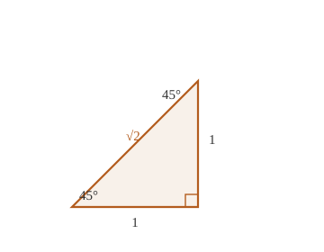
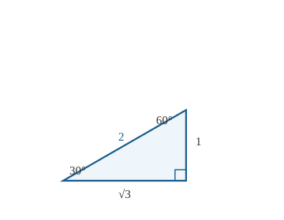

Based on Cambridge IGCSE Mathematics Core & Extended Coursebook, Chapter 15, printed pp.495–498 (exact values of sine, cosine and tangent of 0, 30, 45, 60 and 90 degrees, and the 30-60-90 and 45-45-90 triangles). Printed pages were read from the coursebook scans (printed 495–498). Own wording and new numbers. Teaching stops before 15.5 Solving problems using trigonometry on printed p.499.
Key words: exact trigonometric ratio
The exact trigonometric ratio of \(0^\circ\), \(30^\circ\), \(45^\circ\), \(60^\circ\) or \(90^\circ\) can be written as an integer, a fraction or a surd. These values come from two right-angled triangles and should be remembered, rather than read off a calculator in rounded decimal form.


The remaining exact values are \(\sin 0^\circ=0\), \(\cos 0^\circ=1\), \(\tan 0^\circ=0\), \(\sin 90^\circ=1\), \(\cos 90^\circ=0\). The tangent of \(90^\circ\) is undefined.
Book: exact-value work on printed pp.495–496. New numbers.
Work out the exact value of \(6\sin 30^\circ+4\cos 60^\circ\).
Answer: \(5\)
Book: 30-60-90 triangle on printed pp.496–497. New numbers.
A right-angled triangle has a \(60^\circ\) angle and hypotenuse 14 cm. Find the exact length of the side adjacent to the \(60^\circ\) angle.
Answer: 7 cm
No genuine official past-paper item that is only about exact trigonometric ratios (such as \(\sin 30^\circ=\frac12\)) was found in the available 0580 QP+MS corpus, including later series, variants and years still in scope. Official trigonometry items almost always require a calculated length or angle rather than an exact standard ratio. This is an honest gap.
What is the value of \(8\sin 30^\circ\)?
Answer: \(4\)
What is the value of \(7\tan 45^\circ\)?
Answer: \(7\)
A right-angled triangle has a \(30^\circ\) angle and hypotenuse 10 cm. What is the length, in centimetres, of the side opposite the \(30^\circ\) angle?
Answer: \(5\)